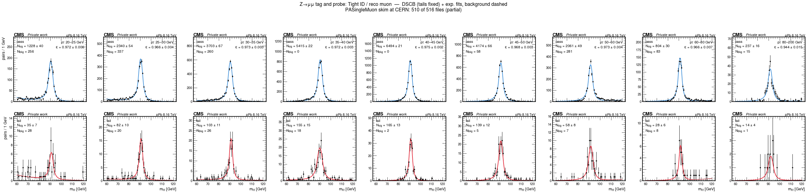
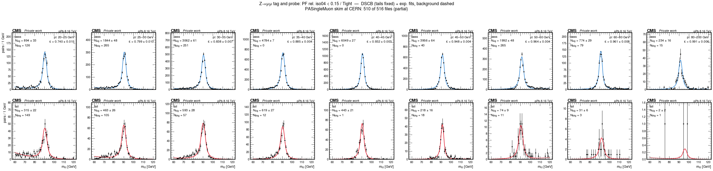
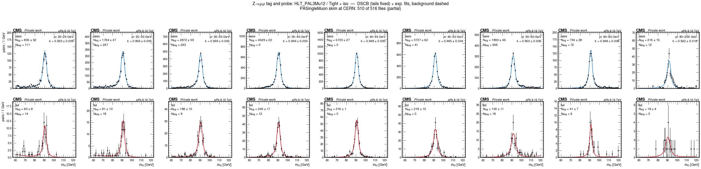
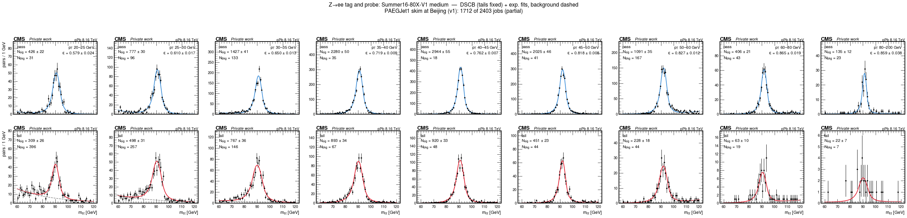
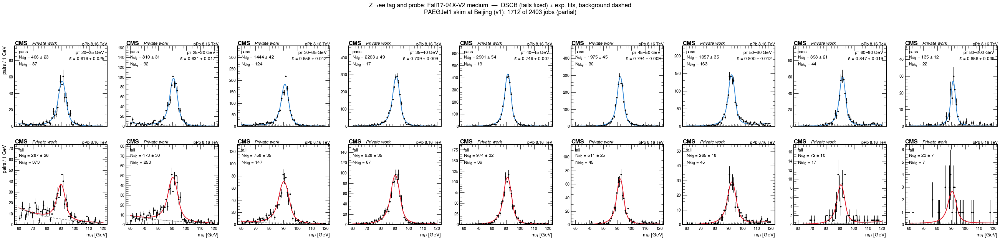
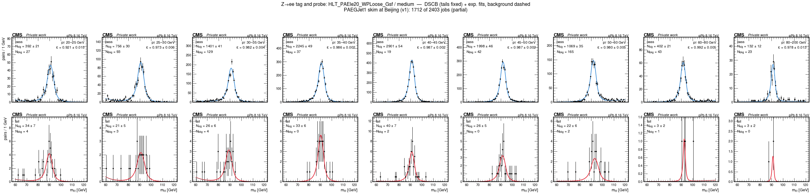

pPb 2016 (8.16 TeV): plots
Plots for DickyChant/HeavyIonsAnalysis#1: CMSSW 10_6 MiniAOD made from the 80X PromptReco AOD, then HiForest and HINPPB NanoAOD in 16_1_3. The code is on the pPb2016_miniAOD_106X branch.
CMS private work, made from partial skims as basic sanity checks. Not results.
2026-10-24: Z peaks and tag-and-probe
Muon POG Tight ID; EGM cut-based Summer16-80X-V1 and Fall17-94X-V2 electron IDs. Isolation uses the standard correction (no pPb event-activity correction yet). Fits: double-sided Crystal Ball + exponential, binned likelihood.
Z peaks


Tag-and-probe efficiencies
Tag: tight, isolated lepton with pT > 25 GeV, matched to the HLT_PAL3Mu12 / HLT_PAEle20_WPLoose_Gsf trigger object. Markers: fits; dashes: same-sign-subtracted counting.
Fit canvases (passing probes on top, failing below, per probe-pT bin)
Muon Tight ID

Muon isolation

HLT_PAL3Mu12

Electron Summer16-80X-V1 medium

Electron Fall17-94X-V2 medium

HLT_PAEle20_WPLoose_Gsf
